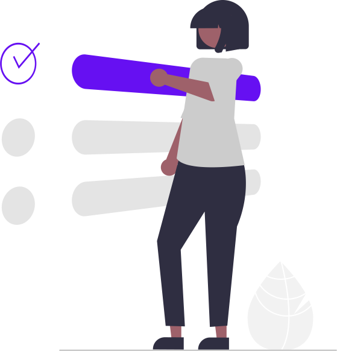

<div class="container my-5">
  <div class="mx-4 mx-sm-auto d-flex flex-column gap-5 justify-content-center col-sm-4 col-md-4 col-lg-3 lg:p-x-4">
      <div class="d-flex flex-column gap-4">
        <div class="text-center">
          
        </div>

        <h1 class="text-center fs-2 fw-normal text-primary m-0">Reportes</h1>

        <nav style="--bs-breadcrumb-divider: url(&#34;data:image/svg+xml,%3Csvg xmlns='http://www.w3.org/2000/svg' width='12' height='12' fill='currentColor' class='bi bi-chevron-right' viewBox='0 0 16 16'%3E%3Cpath fill-rule='evenodd' d='M4.646 1.646a.5.5 0 0 1 .708 0l6 6a.5.5 0 0 1 0 .708l-6 6a.5.5 0 0 1-.708-.708L10.293 8 4.646 2.354a.5.5 0 0 1 0-.708z'/%3E%3C/svg%3E&#34;);"
            aria-label="breadcrumb">
            <ol class="breadcrumb mb-0">
                <li class="breadcrumb-item active" aria-current="page"><a routerLink="/menu/maid">Actividades</a></li>
                <li class="breadcrumb-item active" aria-current="page">Reportes</li>
            </ol>
        </nav>
      </div>
      <div class="d-flex flex-column gap-4">
        <button class="btn btn-primary btn-lg" routerLink="/menu/maid/reports/previous-report">Reporte previo</button>
        <button class="btn btn-primary btn-lg" [disabled]="disabledPosterior">Reporte posterior</button>
        <button class="btn btn-primary btn-lg" [disabled]="disabledFinish" (click)="onSubmit()">Enviar</button>
      </div>
      <div class=" d-flex  gap-4 justify-content-center">
        <button class="btn btn-outline-primary btn-lg" routerLink="/menu/maid">Regresar</button>
      </div>
  </div>
</div>
